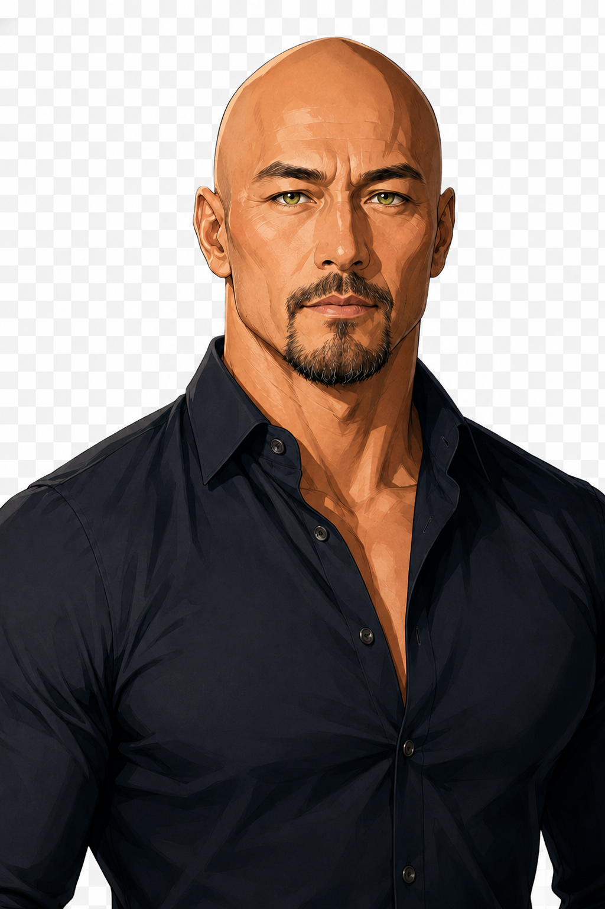
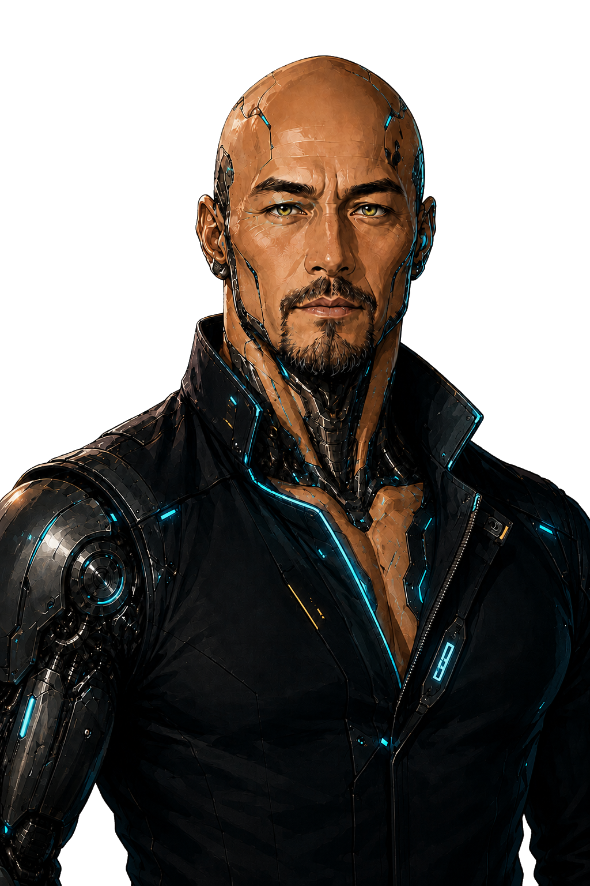

IDENTITY PROFILE // PUBLIC NODE
LINK SECURE● ACTIVE
IDENTIFICATION NODESW-05


VISIBILITY: LIMITEDCYBERNETIC LAYER: STANDBY
CHARACTER PROFILE
活動名
鱗の旅人
活動領域
FFXIV / TESO / WEB CREATIVESongwriting / Novel writing
主な制作
ジェネレーター・企画ページEDMLoveSong・掌編小説
PERSONAL DATA: RESTRICTED // PUBLIC ACCESS ONLY